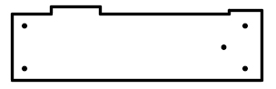
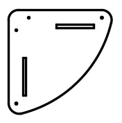
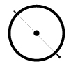

1нет фото0002МПЗакладная для песочницы (уголок 50х50х500)Длина: 50 | Ширина: 5 | Высота: 5Цвет, RAL 90074шт.
4000003.П.21.0Борт верхний (песочницы) 1707 x 145 x 21Длина: 176 | Ширина: 145 | Высота: 2.1Цвет, RAL 30204шт.
5000004.П.21.1Борт боковой (песочницы) 760 x 236 x 21Длина: 76 | Ширина: 22.4 | Высота: 2.1Цвет, RAL 30204шт.
6000004.П.21.0Борт боковой (песочницы) 760 x 236 x 21Длина: 76 | Ширина: 22.4 | Высота: 2.1Цвет, RAL 60184шт.
7000002.П.15.0Соединитель бортов (песочницы) 300 x 200 x 15Длина: 30 | Ширина: 20 | Высота: 1.5Цвет, RAL 80144шт.
8000005.П.15.0Столик угловой (песочницы) 411 x 411 x 15Длина: 41.1 | Ширина: 41.1 | Высота: 1.5Цвет, RAL 60184шт.
9000001.П.15.0Крышка (песочницы) 1590 x 875 x 15Длина: 159 | Ширина: 87.5 | Высота: 1.5Цвет, RAL 30202шт.
10000006.П.15.0Голова (песочница-букашка) 775 x 300 x 15Длина: 77.5 | Ширина: 30 | Высота: 1.5Цвет, RAL 80141шт.
11000007.П.15.0Точка (песочница-букашка) 150 x 150 x 15Длина: 15 | Ширина: 15 | Высота: 1.5Цвет, RAL 801410шт.
12000007.П.15.0Точка (песочница-букашка) 150 x 150 x 15Длина: 15 | Ширина: 15 | Высота: 1.5Цвет, RAL 70472шт.